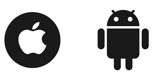

🎵 Music
45 million songs.
Zero ads.
Stream over 45 million songs, ad-free. Or download albums and tracks to listen to offline. All the music in your personal Musii library-no matter where it come from-lives right alongside the Orange Music catalog. Start your free three-month trial with no commitment, and cancle anytime.
Orange Music is available in my MUSII,and
for iOS and Android devices.
